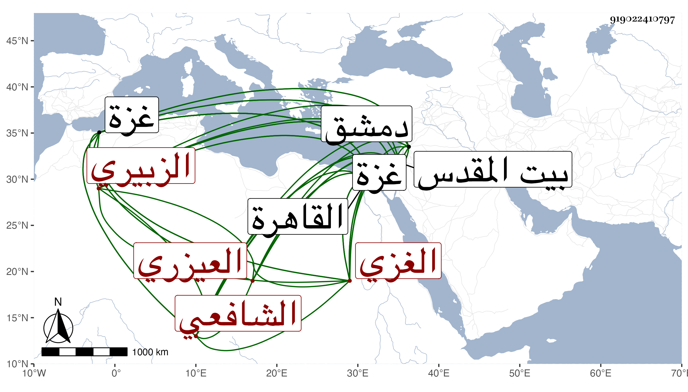

0902Sakhawi.DawLamic.ITO20230111-ara1.EIS1600.919022410797
Biography ID: 919022410797
537
محمد بن محمد بن محمد بن الخضر بن سمري الشمس الزبيري العيزري الغزي الشافعي ويعرف بالعيزري . سرد شيخنا في معجمه نقلا عن خطه نسبه إلى الزبير وليس عنده محمد الثالث وأثبته في الأنباء. ولد بالقدس في ربيع الآخر سنة أربع وعشرين وسبعمائة ونشأ بالقاهرة فتفقه بها على الشمس بن عدلان والتقى أحمد بن محمد العطار الفقيه المتصدر بجامع الحاكم ومحيي الدين ولد شارح التنبيه وغيره المجد الزنكلوني وقرأ بالقرى آت سوى عاصم وحمزة والكسائي على البرهان الحكري وكذا أخذ القراآت عن التقي الأعزب ثم فارق القاهرة في سنة تسع وأربعين فسكن غزة إلى سنة أربع وخمسين ودخل دمشق فأخذ بها عن ابن كثير والبهاء المصري والعماد الحسباني والتقى السبكي وابن القيم وابن شيخ الجبل وغيرهم وأذن له في الإفتاء وأقام على نشر العلم بغزة إلى أن قدم القطب التحتاني القدس فرحل إليه وأخذ عنه وأجاز له وكذا أذن له البدر محمود بن علي بن هلال في الإفتاء ثم أخذ عن السراجين الهندي والبلقيني والتاج السبكي وصنف كثيرا فمن ذلك تعليق على الرافعي سماه الظهير على فقه الشرح الكبير في أربع مجلدات أو خمس ومختصر القوت للأذرعي وأوضح المسالك في المناسك وأسنى المقاصد في تحرير القواعد وشح على الألفية سماه بلغة ذي الخصاصة في حل الخلاصة وتوضيح مختصر ابن الحاجب الأصلي بل وشرح على جمع الجوامع لشيخه سماه تشنيف المسامع في شرح جمع الجوامع وله على المتن مناقشات أرسل بها لمؤلفه سماها البروق اللوامع فيما أورد على جمع الجوامع أجابه عنها في منع الموانع ولذا قال العيزري أنه أرسل بالبروق إلى مصنفه وهو في صلب ولايته فأثنى عليه وأجاب عنه وكذا كتب لشيخنا بأسئلة في عدة علوم وأرسل معها بعدة من تصانيفه وأكثر من التصانيف جدا ونظم في العربية أرجوزة سماها قضم الضرب في نظم كلام العرب وأفرد لنفسه ترجمة في جزء وقفت عليها . ومات في منتصف ذي الحجة سنة ثمان رحمه الله وإيانا . ذكره شيخنا في معجمه وإنبائه . وقال التقى ابن قاضي شهبة وقفت له على اعتراضات على فتوى للسراج البلقيني فوصلت إلى ولده الجلال فردها عليه منتصرا لأبيه فبلغه ذلك فانتصر لنفسه ورد ما قاله الجلال وممن أخذ عنه ناصر الدين الأياسي عالم الحنفية بغزة وأنشد عنه من نظمه :
| عدوك إما معلن أو مكاتم | وكل بأن تخشاه أو تتقي قمن |
| وزد حذرا ممن تجده مكاتما | فليس الذي يرميك جهرا كمن كمن |
وحكى أنه رآه بعد موته وهو يكتب على عادته فقال له ألم تمت قال نعم فقلت له وكتابة بعد الموت فقال ألم تعلم أن المرء يحشر على ما مات عليه فقلت نعم وانتبهت ومن تصانيفه أيضا سلاح الاحتجاج في الذب على المنهاج والغياث في تفصيل الميراث وآداب الفتوى والانتظام في أحوال الأيتام وغرائب السير ورغائب الفكر في علوم الحديث وتهذيب الأخلاق بذكر مسائل الخلاف والاتفاق ورسائل الإنصاف في علم الخلاف وتحبير الظواهر في تحرير الجواهر أجوبة عن الجواهر للأسنائي وأخلاق الأخيار في مهمات الأذكار والكوكب المشرق في المنطق ومصباح الزمان في المعاني والبيان وشرحه وسلسال الضرب في كلام العرب في النحو وبيان فتيا دار العدل واستيفاء الحقوق بمسئلة المخلف والمسبوق ودقائق الآثار في مختصر مشارق الأنوار والمناهل الصافية في حل الكافية لابن الحاجب وغيرها . وهو في عقود المقريزي بحذف محمد الثالث .
